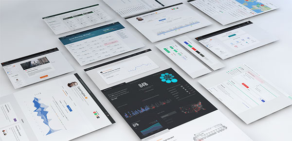

我们的产品团队为您量身打造，方向清晰，才能胜人一筹
免费针对您的需求,提供价值千元的策划方案E－mail：518518@163.com

版权所属 大木科技
30天设计30个黄金比例制作的动物LOGO
谈起黄金比例比例，好像很高大尚很复制的样子，很多同学都不愿意用这个去作图，真的有想像的那么难吗？
查看更多插画家Christoph Niemann制造新奇的视觉体验
柏林的插画家、平面设计师和作 家Christoph Niemann 从日常用品中获取灵感，共同创作了一堆幽默、简洁的插画作品。这些作品着实令人忍俊不禁。
查看更多1989年-2014年 网页设计的演变
估计很多做网页的同学还不了解网页的历史，它是什么时候出现的？
查看更多如何测试图标的可用性
在网页设计和UI设计中，图标不仅仅是为了视觉上的美化，更多是为了提高指示和可识别
查看更多
复杂产品的设计策略
项目进行过半后，当设计师做设计概念提案时，如果没得到任何微笑、点头确认等形式
查看更多文字与图片排版灵感
今天看至tumblr有个不错的小站，里面分享了很多图文排版，作品主要是以一些优美的
查看更多运营设计那些事儿
在现如今的社会中，每天都在进行着一场场没有硝烟的商战。
查看更多设计师什么时候应该多接私活儿？
这是针对大部分设计师的建议，不是绝对的不提倡。
查看更多字体运用的18条规则
文字、文本排版是日常工作中经常用到，看似简单的文字，实际上排版也是很有讲究
查看更多为什么不建议设计师接私活？
跟很多设计师聊过关于工作之外“接私活儿”的话题。
查看更多使用响应式图像
自从2010年Ethan Marcotte开始讨论响应式网页设计，开发者和设计师们竞相寻求处理响应式图片的方法。
查看更多完全满足需求，轻量级 tooltips 提示插件：popper.js
Popper.js 是一个扩展性较好的 tooltips 提示类 JS 插件，不需要依赖 jQuery 库
查看更多iOS设计的这些神细节你发现了吗？
从 iOS 系统设计中，有很多地方是值得视觉和交互设计师学习的，你在使用 iphone 过程可能也会发现一些小细节
查看更多停止不必要的UI动效设计
前言：这篇短文将会探讨UI设计中动画的过度使用，并将其与早期的视觉设计进行对比，提出一些对于有效的GUI动效设计的建议。
查看更多CSS3动画之：水波涟漪般的定位样式
近期工作要做一个用于图像定位的标识，为了让这个指示标识不死板，决定做个简单的动画，动画效果像波浪一样波动
查看更多快速测试响应式网页设计的 Chrome 扩展
测试响应式的网站可以有很多方式，比如使用之前我们介绍过的「使用Chrome浏览器模拟手机端访问网页」，又或者用在线版的「Google Resizer」
查看更多